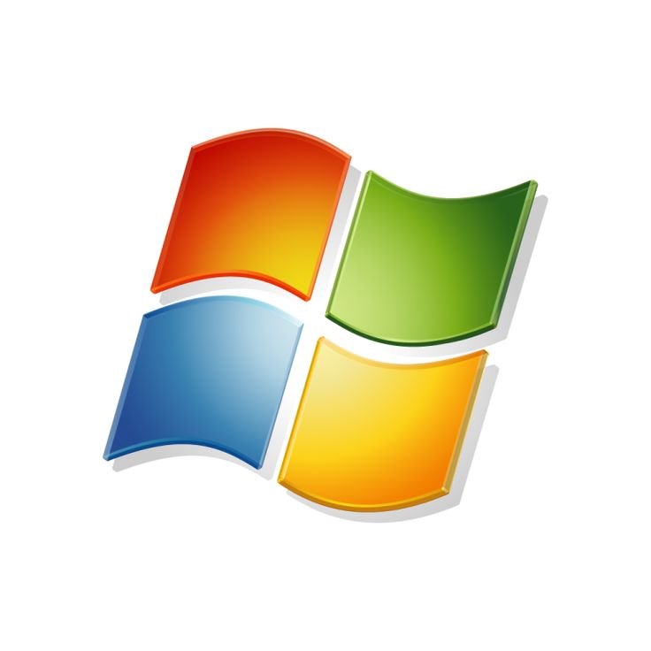

Windows
Windows is a group of several proprietary graphical operating system families developed and marketed by Microsoft.
Versions:
- Windows 10
- Windows 11
- Windows 8.1

macOS
macOS is a Unix-based graphical operating system developed and marketed by Apple Inc.
Versions:
- macOS Monterey
- macOS Big Sur
- macOS Catalina

Linux
Linux is a family of open-source Unix-like operating systems based on the Linux kernel.
Versions:
- Ubuntu 22.04
- Fedora 35
- Debian 11
iOS
iOS is a mobile operating system created and developed by Apple Inc. exclusively for its hardware.
Versions:
- iOS 16
- iOS 15
- iOS 14
Android
Android is a mobile operating system based on a modified version of the Linux kernel and other open-source software.
Versions:
- Android 13
- Android 12
- Android 11